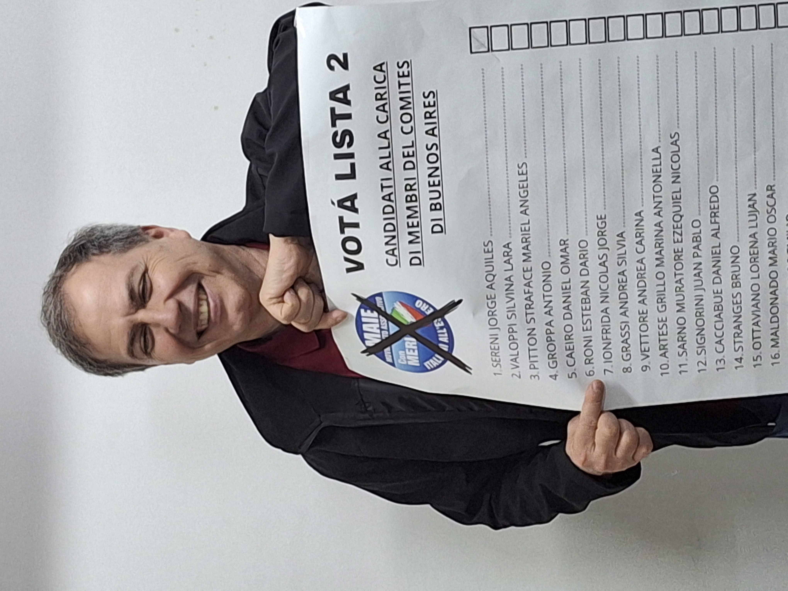
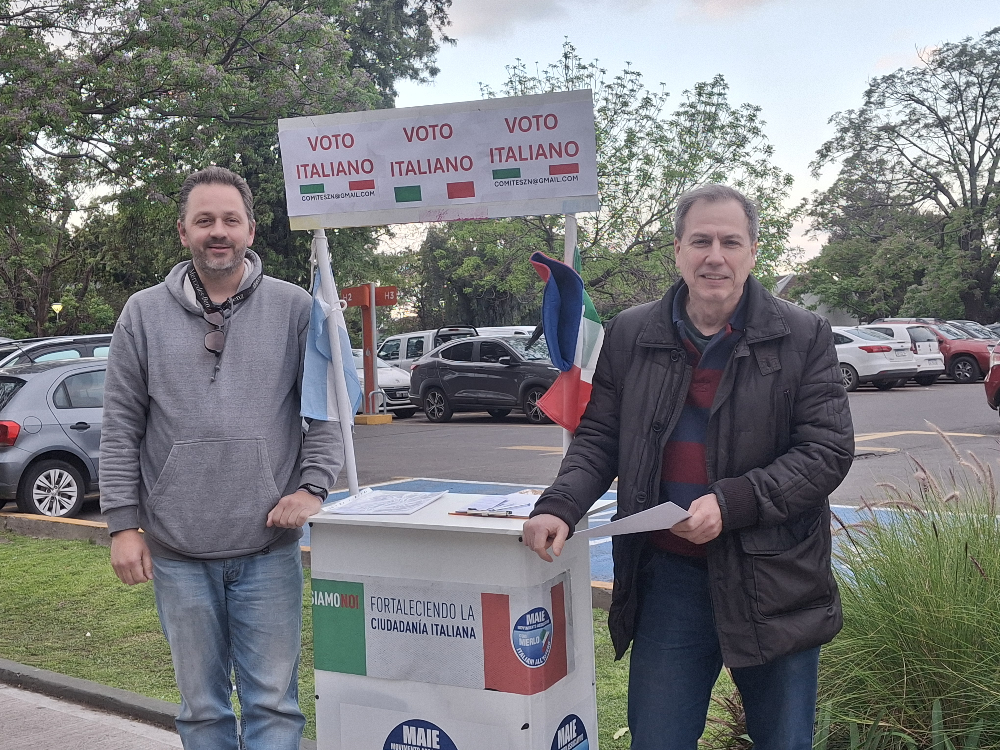
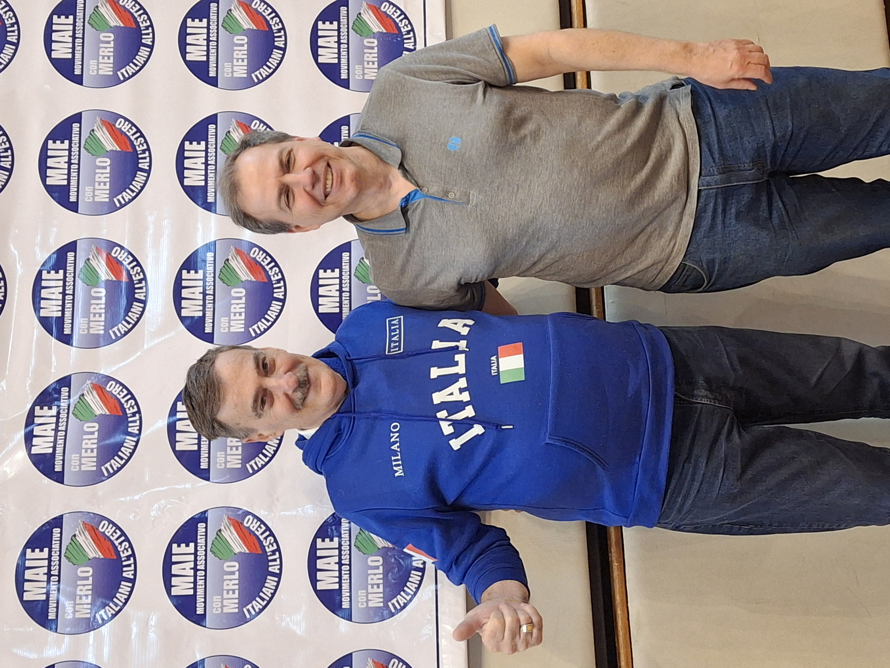
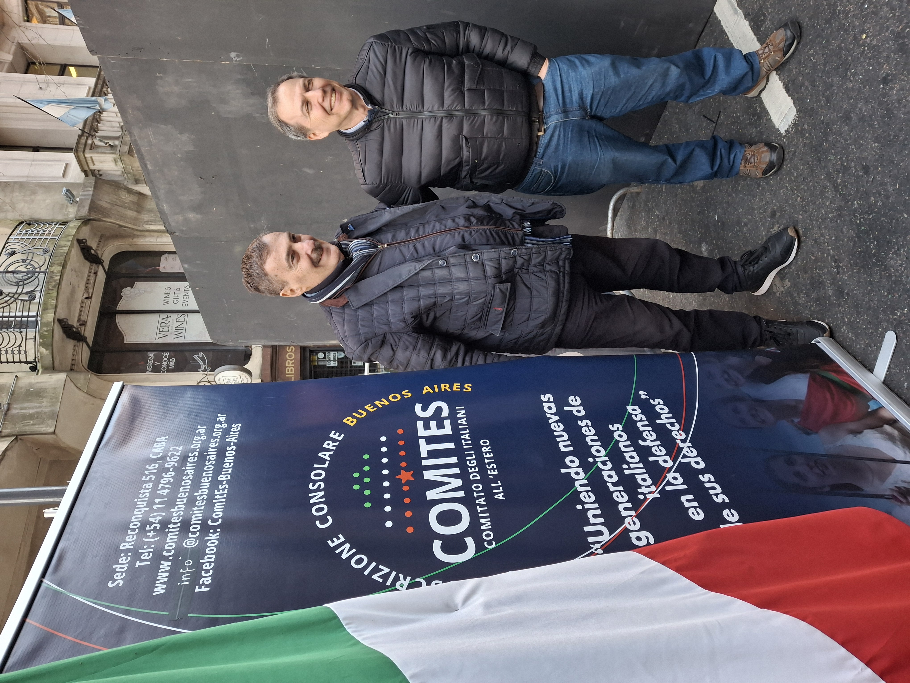
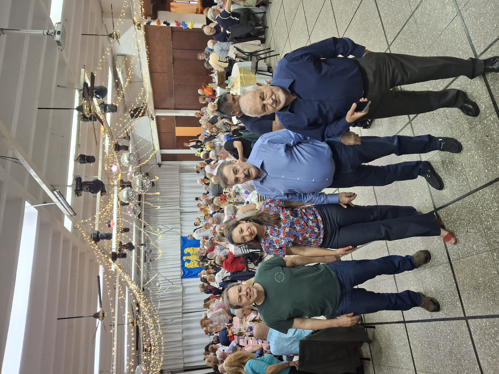
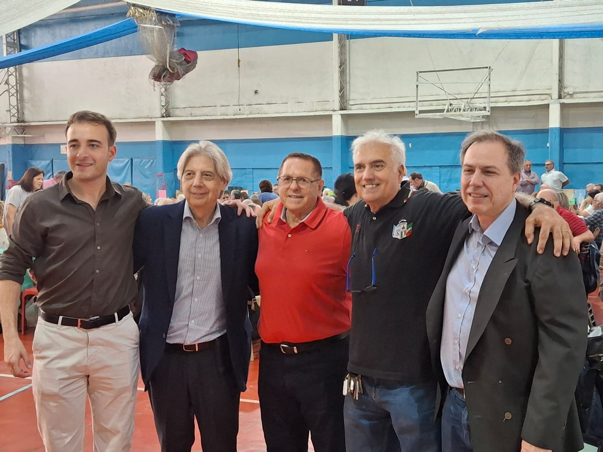

Com.It.Es. Buenos Aires 2026 · Lista 2 MAIE · Candidato N.º 6
Com.It.Es. Buenos Aires 2026 · Lista 2 MAIE · Candidato N.º 6
Vecino de Zona Norte, ingeniero civil, docente universitario y dirigente de nuestras asociaciones italianas. Trabajamos para descentralizar la atención consular, fortalecer los viceconsulados y defender los derechos de cada ciudadano ítalo-argentino.
Voto por correo postal: El sobre debe llegar al Consulado a más tardar el 4 de diciembre de 2026.

“Soy de Zona Norte, de la circunscripción consular de Buenos Aires y, como a tantos connacionales, el Consulado en Capital nos queda lejos. Queremos viceconsulados que nos resuelvan más trámites, que nos brinden más servicios y que nos eviten desplazamientos innecesarios.”
Potenciar las oficinas y corresponsalías consulares en Zona Norte y el Conurbano para evitar viajes largos al centro porteño.
Ampliar la capacidad operativa de los viceconsulados para resolver trámites cotidianos de forma ágil y cercana.
Propuestas concretas, nacidas de escuchar a los vecinos de toda la circunscripción consular de Buenos Aires.
Fortalecer los viceconsulados y agencias consulares de Zona Norte y del Gran Buenos Aires para que resuelvan más trámites cerca de tu casa, evitando desplazamientos innecesarios hasta Capital Federal.
Gestión permanente ante el Consulado General y los parlamentarios del MAIE en Roma para agilizar turnos de pasaporte, actualización del registro AIRE, reconstrucción de ciudadanía y atención a adultos mayores.
Vínculo activo y acompañamiento técnico para nuestros círculos regionales y federaciones (como el Circolo Vicentini y FEDITALIA), facilitando la presentación de proyectos culturales ante Italia.
Difusión de becas de estudio en Italia, promoción de cursos de lengua y cultura italiana, redes profesionales bilaterales y programas de turismo de raíces para jóvenes descendientes.
Soy Esteban Darío Roni, vecino de Zona Norte de la circunscripción consular de Buenos Aires. Combino una sólida carrera profesional y académica con décadas de participación genuina en las instituciones de la colectividad italiana.
Graduado como Ingeniero Civil, con trayectoria ejecutiva en desarrollo de proveedores industriales y gestión de procesos complejos, aportando capacidad organizativa y rigor técnico al Com.It.Es.
Profesor universitario en el Instituto Tecnológico de Buenos Aires (ITBA), comprometido con la formación de jóvenes profesionales y la cooperación académica entre Argentina e Italia.
Integrante de la Comisión Directiva del Circolo Vicentini di Buenos Aires, participante activo en FEDITALIA y candidato de la Lista 2 — MAIE (Movimento Associativo Italiani all'Estero).
Presencia permanente en asociaciones regionales, encuentros comunitarios y puntos informativos en Zona Norte y toda la circunscripción de Buenos Aires. Hacé clic en cualquier foto para ampliarla.

Zona Norte
Equipo Lista 2
Com.It.Es. Bs. As.
Asociaciones Articulación
Articulación

ColectividadPracticá en este simulador cómo marcar la Lista 2 — MAIE y escribir tu preferencia para Esteban Darío Roni (N.º 6). Podés sumar hasta 6 preferencias en total dentro de la misma lista.
Elezione del Com.It.Es. • Circoscrizione Consolare di Buenos Aires
Hacé clic sobre el logo de la Lista 2 — MAIE para marcarlo con una X
Movimento Associativo Italiani all'Estero con Merlo
Con lapicera azul o negra, hacé una X sobre el logo de la Lista 2 (MAIE) y escribí RONI ESTEBAN DARIO (podés sumar hasta 5 nombres más de la misma lista).
Doblá la boleta, introducila únicamente en el sobre blanco pequeño (sin escribir nada por fuera) y cerralo bien.
Dentro del sobre grande dirigido al Consulado General, poné el sobre blanco chico cerrado junto con el talón electoral que vino en tu paquete.
El franqueo es pago (gratuito). Envialo cuanto antes para que llegue al Consulado antes del cierre: 4 de diciembre de 2026.